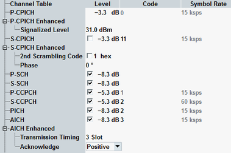

This section configures the R99 channels. Exception: The description of DPCH is covered in the next section, see "DPCH / F-DPCH Configuration".
The settings described below apply to a single carrier scenario and to carrier 1 of a multi-carrier scenario. For remaining carriers, only some of the settings are displayed. Several R99 channels are not transmitted via remaining carriers. For switching between the carriers, see "Select Carrier".

The column titles of the channel tables (e.g. "Level") do not apply to the "... Enhanced" settings.
Defines the level of a channel relative to the base level of the generator (see "Output Power (Ior)"). All channels except P-CPICH can be activated and deactivated individually.
Option R&S CMW-KS410 is required for S-CPICH.
For background information, see "Power Levels".
Remote command:Defines the channelization code number of a channel. Some channels are never channelized (e.g. S-SCH), so no channel code is displayed. Gray values indicate fixed standardized channelization codes. They cannot be modified but are relevant for display of code conflicts.
For background information, see "Channelization Codes"
Option R&S CMW-KS410 is required for S-CPICH.
Remote command:Displays the symbol rate of a channel. For most channels, this value is fixed.
Option R&S CMW-KS410 is required for S-CPICH.
Defines the P-CPICH power level to be reported to the UE. The UE determines the path loss by comparison of this power level and the power level measured on the pilot bits of the P-CPICH. A larger path loss results in a larger initial preamble power.
Remote command:Option R&S CMW-KS410 is required.
Defines index k used for calculation of a secondary scrambling code number by adding k to the primary scrambling code number (see "Primary Scrambling Code").
If the secondary scrambling code is deactivated, the primary scrambling code is used.
Remote command:Defines the phase of the S-CPICH in degrees, relative to the P-CPICH phase. Within the allowed range, you can set multiples of -45 degrees.
Remote command:The following enhanced settings apply to AICH.
Defines the minimum allowed time delay between two consecutive RACH preambles. RACH preambles are sent by the UE during a random access procedure.
Remote command:Defines how the R&S CMW acknowledges RACH preambles received from the UE.
- Positive: Normal operation mode. The R&S CMW acknowledges or negatively acknowledges the preambles appropriately. The UE can be registered and a connection can be set up.
- Negative: The R&S CMW always responds with negative acknowledgments so that the random access procedure fails after the maximum number of preamble cycles has been reached. The UE will reinitiate a new preamble cycle after a while but not succeed in performing a registration or establishing a connection.
This setting can be used for repeated tests of the random access procedures.